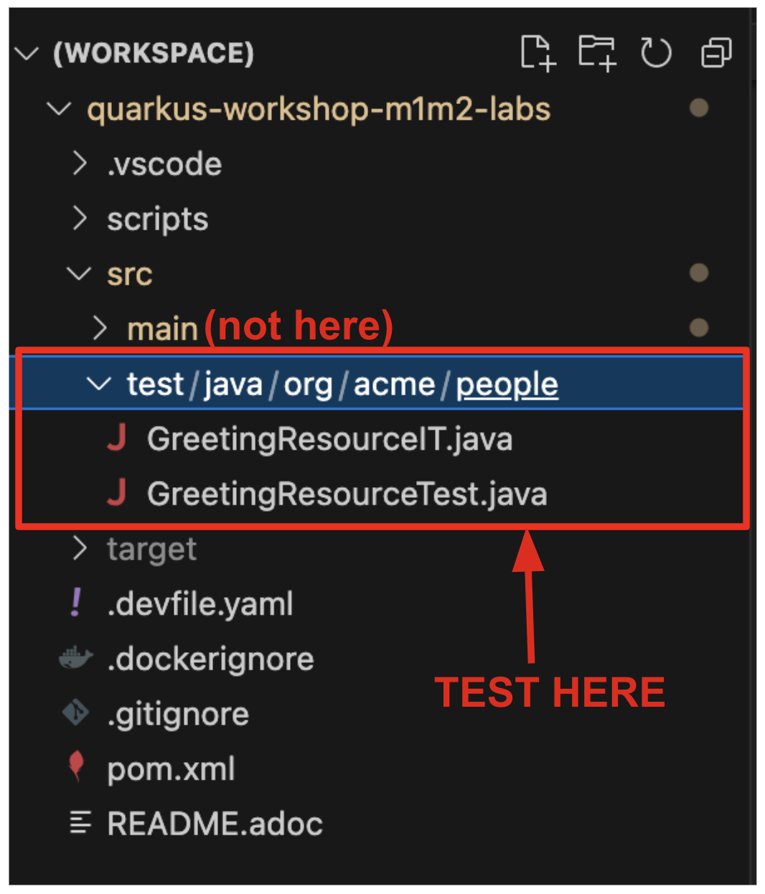

Testing
Quarkus supports continuous testing, where tests run immediately after code changes have been saved. This allows you to get instant feedback on your code changes. Quarkus detects which tests cover which code, and uses this information to only run the relevant tests when code is changed.
In this step we’ll show you how to effectively write functional and continuous testing for your Quarkus Apps. You should already have a completed test written for you, including the correct pom.xml setup where you should see 2 test dependencies:
<dependency>
<groupId>io.quarkus</groupId>
<artifactId>quarkus-junit5</artifactId>
<scope>test</scope>
</dependency>
<dependency>
<groupId>io.rest-assured</groupId>
<artifactId>rest-assured</artifactId>
<scope>test</scope>
</dependency>quarkus-junit5 is required for testing, as it provides the @QuarkusTest annotation that controls the testing framework. rest-assured is not required but is a convenient way to test HTTP endpoints, we also provide integration that automatically sets the correct URL so no configuration is required.
The basic test is in the GreetingResourceTest (in the src/test/java/org/acme/people directory). For example:
@QuarkusTest
public class GreetingResourceTest {
@Test
public void testHelloEndpoint() {
given()
.when().get("/hello")
.then()
.statusCode(200)
.body(is("hello"));
}
}|
When creating new tests, always double-check to be sure you are in the

|
Starting Continuous Testing
Go back to the terminal and go down the bottom of the screen you should see the following:
Press r and the continuous testing will start running. You should see the status change down the bottom of the screen as they are running, and it should finish with the following error:
This is because you changed the greeting in an earlier step. In GreetingResource, change hola back to hello (in the GreetingResource class) and the tests will run again automatically. Confirm all tests pass in the terminal:
INFO [io.qua.test] (Test runner thread) All tests are now passing
--
All 1 test is passing (0 skipped), 1 test was run in 351ms. Tests completed at 01:19:02 due to changes to GreetingResource.class.
Press [e] to edit command line args (currently ''), [r] to re-run, [o] Toggle test output, [:] for the terminal, [h] for more options>Add a new test in the existing GreetingResourceTest.java class under the // add more tests marker that tests the /hello/greeting endpoint by copying this code below the existing test:
@Test
public void testGreetingEndpoint() {
String uuid = UUID.randomUUID().toString();
given()
.pathParam("name", uuid)
.when().get("/hello/greeting/{name}")
.then()
.statusCode(200)
.body(startsWith("hello " + uuid));
}You will see new test result instantly in the terminal:
--
All 2 tests are passing (0 skipped), 2 tests were run in 401ms. Tests completed at 01:20:05 due to changes to GreetingResourceTest.class.
Press [e] to edit command line args (currently ''), [r] to re-run, [o] Toggle test output, [:] for the terminal, [h] for more options>Controlling Continuous Testing
There are various hotkeys you can use to control continuous testing. Pressing h will display the following list of commands in the terminal:
== Continuous Testing
[r] - Re-run all tests
[f] - Re-run failed tests
[b] - Toggle 'broken only' mode, where only failing tests are run (disabled)
[v] - Print failures from the last test run
[p] - Pause tests
[o] - Toggle test output (disabled)
== Exceptions
[x] - Open last exception (or project) in IDE (none)
== HTTP
[w] - Open the application in a browser
[d] - Open the Dev UI in a browser
== System
[s] - Force restart
[e] - Edits the command line parameters and restarts ()
[i] - Toggle instrumentation based reload (disabled)
[l] - Toggle live reload (enabled)
[j] - Toggle log levels (INFO)
[h] - Show this help
[:] - Enter terminal mode
[q] - Quit the applicationQuarkus also provides a new experimental Dev UI, which is available in dev mode (when you start quarkus with mvn quarkus:dev) at /q/dev by default. It allows you to quickly visualize all the extensions currently loaded, see their status and go directly to their documentation.
To show up the public endpoints, select Show plug-in endpoints. Then, unfold the ENDPOINTS > Public and select the Open Dev UI icon.
Open a new web browser or tab window and paste the URL.
|
In case you have an issue (e.g., ERROR [io.qua.ver.htt.run.dev.DevConsoleCORSFilter] (vert.x-eventloop-thread-0) Only localhost origin is allowed, but Origin header value is…) to access the Dev UI, please append |
When you select Open on the left bottom, it will show the Quarkus runtime logs:
|
In case you see Tests not running, reload the DEV UI page. |
Select Continuous Testing on the left menu, you will that see 2 test cases passed with a green color.
Injecting a URI
It is also possible to directly inject the URL into the test which can make it easy to use a different client. This is done via the @TestHTTPResource annotation.
Let’s write a simple test that shows this off to load some static resources. First create a simple HTML file in src/main/resources/META-INF/resources/. Right-click on this directory and select New → File. Name the file test.html in the dialog box:
Add this code to the file:
<!DOCTYPE html>
<html>
<head>
<title>Testing with Quarkus</title>
</head>
<body>
<p>... it's fun and entertaining!</p>
</body>
</html>Our test will verify that the <title> tags contain the right content.
Next, create a new test under src/test/java in the org.acme.people package called StaticContentTest.java. Replace this code to the file:
package org.acme.people;
import java.io.ByteArrayOutputStream;
import java.io.IOException;
import java.io.InputStream;
import java.net.URL;
import java.nio.charset.StandardCharsets;
import org.junit.jupiter.api.Assertions;
import org.junit.jupiter.api.Test;
import io.quarkus.test.common.http.TestHTTPResource;
import io.quarkus.test.junit.QuarkusTest;
@QuarkusTest
public class StaticContentTest {
@TestHTTPResource("test.html") (1)
URL url;
@Test
public void testIndexHtml() throws Exception {
try (InputStream in = url.openStream()) {
String contents = readStream(in);
Assertions.assertTrue(contents.contains("<title>Testing with Quarkus</title>"));
}
}
private static String readStream(InputStream in) throws IOException {
byte[] data = new byte[1024];
int r;
ByteArrayOutputStream out = new ByteArrayOutputStream();
while ((r = in.read(data)) > 0) {
out.write(data, 0, r);
}
return new String(out.toByteArray(), StandardCharsets.UTF_8);
}
}| 1 | The @TestHTTPResource annotation allows you to directly inject the URL of the Quarkus instance, the value of the annotation will be the path component of the URL. For now @TestHTTPResource allows you to inject URI, URL and String representations of the URL. |
The test results will be updated automatically in the terminal:
All 3 tests are passing (0 skipped), 1 test was run in 451ms. Tests completed at 01:34:45 due to changes to StaticContentTest.class.Injection into tests
So far we have only covered integration style tests that test the app via HTTP endpoints, but what if we want to do unit testing and test our beans directly?
Quarkus supports this by allowing you to inject CDI beans into your tests via the @Inject annotation (in fact, tests in Quarkus are full CDI beans, so you can use all CDI functionality). Let’s create a simple test that tests the greeting service directly without using HTTP.
Create a new test class file in src/test in the org.acme.people package called GreetingServiceTest.java. Use the following code for the file’s contents (note we’ve included the proper imports for you):
package org.acme.people;
import jakarta.inject.Inject;
import org.acme.people.service.GreetingService;
import org.junit.jupiter.api.Assertions;
import org.junit.jupiter.api.Test;
import org.slf4j.Logger;
import org.slf4j.LoggerFactory;
import io.quarkus.test.junit.QuarkusTest;
@QuarkusTest
public class GreetingServiceTest {
private static final Logger LOGGER = LoggerFactory.getLogger("GreetingServiceTest");
@Inject (1)
GreetingService service;
@Test
public void testGreetingService() {
Assertions.assertTrue(service.greeting("Quarkus").startsWith("hello Quarkus"));
}
}| 1 | Here we are injecting our GreetingService and calling it, just as our RESTful resource endpoint does in the production code. |
You will see new test along with your existing tests run instantly in the terminal once again. Verify the tests are passing.
|
As mentioned above Quarkus tests are actually full CDI beans, and as such you can apply CDI interceptors as you would normally. As an example, if you want a test method to run within the context of a transaction you can simply apply the In addition to this you can also create your own test stereotypes. Stereotypes can be particularly useful in large applications where you have a number of beans that perform similar functions, as it allows you to do something akin to multiple inheritance (multiple annotations) without having to repeat yourself over and over. For example we could create a If we then apply this annotation to a test class it will act as if we had applied both the |
Mock support
Quarkus supports the use of mock objects using the CDI @Alternative mechanism. To use this simply override the bean you wish to mock with a class in the src/test/java directory, and put the @Alternative and @Priority(1) annotations on the bean. Alternatively, a convenient io.quarkus.test.Mock stereotype annotation could be used. This built-in stereotype declares @Alternative, @Priority(1) and @Dependent.
Let’s mock our existing GreetingService. Although our existing service is pretty simple, in the real world the service might have too many dependencies on external systems to be feasible to call directly.
Create a new class file in src/test/java in the org.acme.people package called MockGreetingService.java with the following code:
package org.acme.people;
import jakarta.enterprise.context.ApplicationScoped;
import org.acme.people.service.GreetingService;
import io.quarkus.test.Mock;
@Mock
@ApplicationScoped
public class MockGreetingService extends GreetingService {
@Override
public String greeting(String name) {
return "hello " + name + " <<<<<<<<<< from mock greeting >>>>>>>>>>";
}
}Now modify our existing GreetingServiceTest class to add a log statement showing the value retrieved during the test. Modify the testGreetingService method to look like:
@Test
public void testGreetingService() {
LOGGER.info("greeting: " + service.greeting("Quarkus"));
Assertions.assertTrue(service.greeting("Quarkus").startsWith("hello Quarkus"));
}The test results of the mock will be updated automatically in the terminal:
All 4 tests are passing (0 skipped), 1 test was run in 556ms. Tests completed at 01:37:50 due to changes to MockGreetingService.class and 1 other files.Press o to toggle test output and press r to re-run the continuous testing. Then, you will see:
INFO [GreetingServiceTest] (Test runner thread) greeting: hello Quarkus <<<<<<<<<< from mock greeting >>>>>>>>>>This confirms that our MockGreetingService is being used instead of the original GreetingService.
Make sure to press p to pause the continuous testing before you go to the next lab:
Tests paused
Press [r] to resume testing, [o] Toggle test output, [:] for the terminal, [h] for more options>Congratulations!
In this section we covered basic testing of Quarkus Apps using the @QuarkusTest and supporting annotations. This is an important part of any software engineering project and with Quarkus, testing has never been easier. For more information on testing with Quarkus, be sure to review the Quarkus Testing Guide.
In the next section we’ll talk about how to effectively debug Quarkus applications. On with the show!